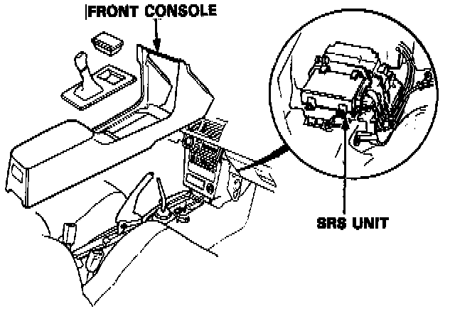
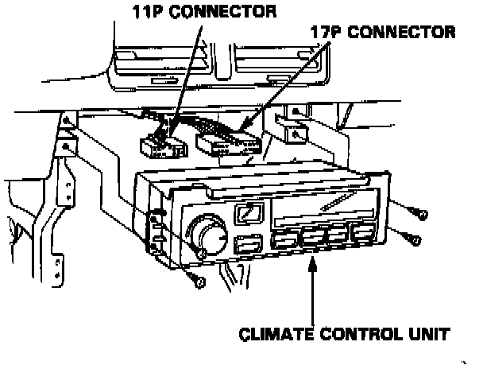

Electronic Climate Control
NOTE: SRS wire harness is routed near the console.WARNING: All SRS wire harness and connectors are colored yellow. Do not use electrical test equipment on these circuit.
CAUTION: Be careful not to damage SRS wire harness when servicing the console.
Removal:

1. Remove the screws, then remove the front console.
NOTE: Be careful not to break the pawls on the front console.
2. Remove the screws (4), then pull out the climate control unit.

3. Disconnect the wire harness from the climate control unit before removing.
Installation:
Install the Climate control unit in the reverse order of removal.